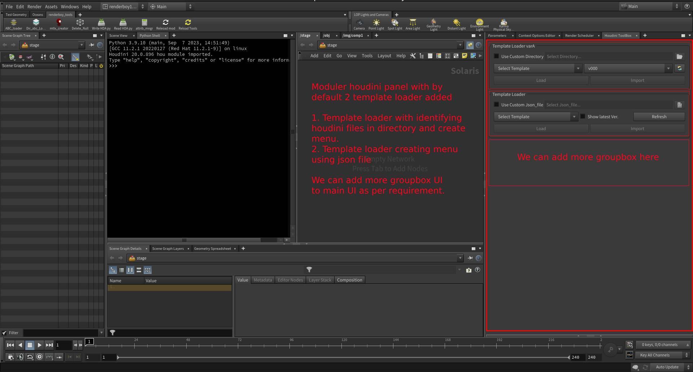

HPanelToolBox is a modular, customizable Houdini panel built with PySide2. It offers reusable group boxes that streamline artist workflows by integrating template loading, tool execution, and more custom UI utilities into a single panel.
Designed for flexibility and future upgrades, this panel can be extended with new group boxes as per project needs.
✨ Key Features
- 🧠 Template Loaders
- Auto-Generated Names – Reads template files and generates dropdowns.
- JSON-Based Loader – Loads versioned templates from a configuration file.
- 📦 Modular Architecture – Each tool group is isolated and independently reusable, also we can more groupboxes with more tools.
- ⚙️ Developer-Ready – Clean PySide2 architecture, extendable with minimal changes.
- 🧰 Custom Tool Buttons – Easily add helper or project-specific scripts.
- 🖼️ Houdini Panel Ready – Designed to be dropped into a Python Panel tab.
📸 Screenshots / Video links


Video Demonstration
📦 Installation
- Houdini Packages Setup
- Replace DIR_PATH key-value
path/to/source/folderwith current path of this repo in explorer insideHPanelToolBox_tool.jsonfile. - Copy the
HPanelToolBox_tool.jsonpackage file inside the same houdini'spackages/directory.: - On Windows:
C:/Users/<YourName>/Documents/houdiniXX.X/packages/ - On Linux:
/home/<YourName>/houdiniXX.X/packages/
- Replace DIR_PATH key-value
- Launch the Tool
- Launch Houdini
- Go to
Windows→Python Panel - Click on
Houdini ToolBox - If all goes well it will show you the panel.
🖥️ Default Included Modules
TemplateLoaderA: Auto-generates template names from a directory.TemplateLoaderB: Loads structured templates via a JSON file.
Portfolio link - https://github.com/thecodeshastra